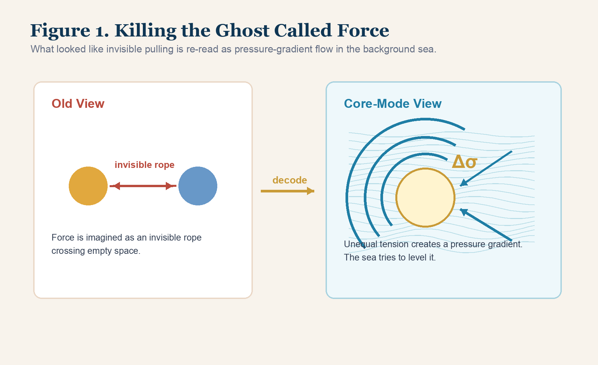
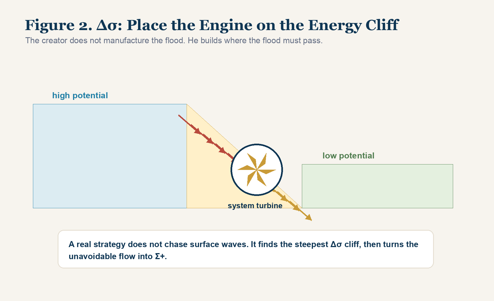
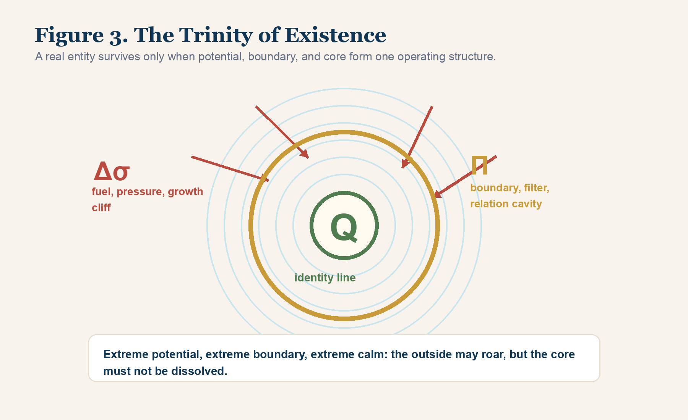

Chapter 3 | The Driver and Boundary of All Things: Potential Difference and the Relation Cavity
“An apple struck Newton’s head, and he named the pain gravity. In the creator’s eye, the apple was a vortex that had lost its hanging tension and slid down the geometric slope of the Light-Nature Background Sea into a deeper pressure collapse. There is no force in the universe. There is only unequal geometric tension.”
1. Killing the Ghost Called Force
After the first two chapters, two ancient idols have already fallen.
Space is not an empty room. It is the Light-Nature Background Sea.
Time is not a river. It is event order T, the ledger of state translation.
Now we enter the engine room.
We must ask the question that even a child can ask, yet the highest theories often hide behind symbols:
Why does anything move?
The old world answered with a word:
force.
Newton gave the word its royal status. A body changes its motion because a force acts on it. There is gravity. There is friction. There is push. There is pull. There is tension. There is impact. The word was so useful that humanity began to treat it as if it were a thing, as if the universe were filled with invisible ropes tugging objects across an empty stage.
This worked beautifully for calculation.
It failed at the bottom layer.
Core-Mode puts the word force on trial and strips away its costume.
If the universe is not empty, if X topology fills the bottom structure, if every entity is a vortex in the background sea, then what does it mean for a “force” to cross space? Who sends it? What carries it? Where is the invisible rope tied? How does the rope pass through a void that, in Core-Mode, does not exist?
The old word hides the real mechanism.
There is no ghost messenger.
There is no magical pull across nothing.
There is only the oldest physical instinct of a tense medium:
the drive to level unequal tension.
When one region of the background sea is compressed and another is relaxed, the sea does not remain indifferent. Its geometry demands correction. Pressure gradients form. Flow begins. Boundaries are pushed. Vortices move. Structures deform. The old mind sees the outcome and says “force.” Core-Mode sees the medium itself acting under unequal topological conditions.
Force is the surface name.
Potential difference is the engine.
This is why force feels both powerful and suspicious.
At the level of human use, the word is efficient. A child can push a door. A magnet can pull a nail. Earth can attract a stone. A hand can strike a wall. The word “force” gathers all these cases into one convenient bucket. For engineering, that bucket is useful.
But a bucket is not a bottom-layer explanation.
When Core-Mode kills force, it does not deny the measured acceleration. It does not deny that bodies move, collide, resist, and deform. It denies that “force” is a primary substance of reality. Force is a compression label. It is the name given to the visible result of a deeper tension correction.
This distinction matters because a civilization that worships the label eventually stops looking for the mechanism. It says “gravity” and stops asking what kind of medium condition makes falling possible. It says “market demand” and stops asking where the pressure cliff is forming. It says “motivation” and stops asking which Δσ is strong enough to move a human system.
The label closes the question.
Core-Mode reopens it.

2. Δσ: The Ultimate Fuel of Motion
Core-Mode names the true fuel of cosmic motion:
Δσ, potential difference.
This is not merely a difference in ordinary energy level. It is a difference in the tension state of the Light-Nature Background Sea. It is the unevenness that appears when X topology is stretched, compressed, twisted, collapsed, heated, cooled, charged, starved, overloaded, or otherwise driven away from symmetry.
The sea in perfect symmetry is quiet.
But the universe is not perfectly symmetric.
Vortices exist. Stars exist. charges exist. temperatures differ. Bodies rotate. Cavities open. Boundaries fail. Systems accumulate pressure. Others fall into low-energy states. Everywhere, local conditions deviate from the ideal stillness of the background sea.
The moment a difference appears, the engine ignites.
High-potential regions push toward low-potential regions. Compressed geometries seek release. Hot systems pressure colder systems. Dense structures deform surrounding flow. Capital seeks return. Desire seeks completion. Thought seeks closure. A storm seeks discharge.
The old world assigns different names to these movements.
Gravity.
Heat transfer.
Electrical current.
Market flow.
Motivation.
At the bottom layer, Core-Mode reads the same grammar:
a difference has appeared, and reality attempts to translate it.
Consider gravity.
The old picture says a mass attracts another mass. A mysterious pull reaches across space and draws the apple toward Earth. This picture was useful, but it leaves the deep physical carrier unclear.
In Core-Mode, a massive body is a huge vortex collapse in the background sea. It creates a pressure depression and geometric gradient in the surrounding X topology. The apple does not receive an invisible command from Earth. It moves along the pressure geometry of the sea. The background medium pushes the system toward a lower, more stable relation state.
What we call falling is not obedience to a rope.
It is the motion of a vortex through a pressure slope.
Consider heat.
The old picture says heat flows from hot to cold. Correct, but why?
A hot system is a region of high-frequency micro-vortex agitation. A cold system is a region of lower state agitation. Their contact creates a severe Δσ. The background sea demands translation. High-frequency disturbance spreads into low-frequency regions until the gradient is reduced. Heat transfer is not a gentle moral preference for equality. It is a structural correction imposed by the medium.
Consider electricity.
Voltage is already the old physics name for potential difference. But Core-Mode widens the concept. A charge imbalance is a localized topological tension in the sea. Current flows because the system seeks a path through which the unevenness can be reduced. A circuit is a controlled channel for Δσ.
The rule is simple:
Where there is Δσ, motion becomes possible.
Without Δσ, nothing starts.
No fall. No burn. No current. No learning. No growth. No creation.
The universe does not move because an abstract word called force commands it.
The universe moves because it cannot tolerate unprocessed difference.
This also explains why “balance” is not always life.
People often speak as if balance were the highest good. But a perfectly balanced system has no engine. If there is no difference between high and low, inside and outside, ignorance and knowledge, hunger and food, pain and remedy, present and future, then no motion begins. A world without Δσ is quiet because it is dead.
Life requires imbalance.
A seed grows because there is difference between stored potential and external environment. A child learns because there is difference between not knowing and needing to act. A civilization innovates because there is difference between an unsolved pressure and an available method. A theory is born because an old framework cannot carry a new contradiction.
This does not mean every difference is good. A poison can also be a difference. A panic can be a difference. A false opportunity can be a difference. Δσ is fuel, not wisdom. It can drive growth or destruction depending on whether the system has boundary and core.
But without Δσ, nothing happens.
This is why comfort can become a hidden death. A person whose environment has no meaningful pressure may appear safe, but the engine is losing rotation. Skills decay. Attention weakens. Identity softens. The Q core stops being tested. The relation cavity becomes ornamental. The system is not attacked by disaster. It is dissolved by lack of potential.
The creator therefore does not seek a painless world.
The creator seeks the right pressure.
3. Social and Market Mapping: Finding the Energy Cliff
Δσ does not remain inside physics vocabulary. It runs through human life, markets, organizations, invention, and civilization.
Why do financial markets move violently?
The old economist may say supply and demand. The trader may say fear and greed. The politician may say policy. The analyst may point to earnings, liquidity, rates, narrative, war, or technology.
These explanations are not useless. They name visible channels.
Core-Mode asks for the deeper structure:
Where is the Δσ?
A market is a human-made background sea of capital, information, expectation, fear, regulation, scarcity, and desire. Capital does not sit still. It searches for potential difference. When a new technology appears, when a supply chain breaks, when a resource becomes scarce, when a political event changes future expectations, an energy cliff opens in the economic sea.
Capital rushes toward it.
People then tell stories after the flood has already begun.
The same is true for entrepreneurship.
A weak builder chases surface waves. They watch trend lines, imitate slogans, follow attention, and try to predict superficial motion. They are hypnotized by η, the visible disturbance.
A strong builder searches for Δσ.
Where is the pressure difference so large that motion must occur? Where is the old system unable to process the new demand? Where is pain accumulating? Where is cost collapsing? Where is a new tool making an old process obsolete? Where is a civilization-level contradiction no one has built a cavity around?
The builder does not manufacture the flood.
The builder places the engine where the flood must pass.
This is the turbine principle.
If you build in a flat region, you must spend enormous energy pushing water by yourself. If you build on a steep Δσ cliff, the water comes with its own violence. Your job is to shape the channel, protect the turbine, and convert uncontrolled flow into Σ+, positive structured output.
This is also why timing is not the same as luck.
Luck is the word used by people who cannot see the pressure gradient.
A creator with Core-Mode eyes sees the cliff before the crowd names it.
The same principle applies to personal growth.
Many people try to improve by pushing themselves with willpower. They make plans. They force habits. They punish themselves for failing. But if the surrounding Δσ is weak, the system has no real slope. The person must keep pushing the water by hand. Exhaustion arrives quickly.
A wiser approach is to build life around a real pressure cliff.
If you want to learn a language, do not only stare at vocabulary lists. Create a situation where the language must be used: a reader, a market, a collaborator, a publication, a public promise, a product that requires the language to function. Now the system has Δσ. The need pulls translation forward.
If you want to build a company, do not begin with a slogan. Find a pain so strong that money, attention, and urgency are already gathering around it. Then build the channel.
If you want to write a book, do not merely admire the idea of writing. Put yourself near a contradiction so hot that not writing becomes more painful than writing. Then the page becomes a pressure outlet.
This is not romantic. It is hydraulic.
The correct pressure cliff makes discipline easier because the flow is real. The wrong pressure cliff makes even talent rot because the system has no natural drive.
That is why Core-Mode asks, before every serious project:
Where is the Δσ?
If you cannot answer, you do not yet have an engine.

4. If Only Δσ Existed, the Universe Would Die
Now a dangerous contradiction appears.
If Δσ is everywhere, and if Δσ drives all unevenness toward leveling, why has the universe not already dissolved into perfect sameness?
If high flows to low, hot to cold, dense to thin, charged to uncharged, stressed to relaxed, then why do stable things remain? Why are there atoms, stars, planets, organisms, minds, companies, languages, and civilizations? Why does the background sea not simply flatten every difference and fall into a final dead calm?
The answer is boundary.
Δσ alone would destroy the universe.
A universe with only potential difference would be a universe of instant leveling. Every gradient would discharge. Every structure would dissolve. Every identity would be erased into homogeneous equilibrium.
The fact that anything exists proves that something resists total leveling.
Core-Mode names this resisting structure:
Π, the relation cavity.
Π is the sixth great principle of existence. It is the boundary through which a vortex maintains an inside against an outside. It does not eliminate Δσ. It regulates it. It filters it. It decides what may enter, what must be rejected, what can be transformed, and what would kill the system if admitted.
The universe survives because Δσ and Π oppose and complete each other.
Δσ provides motion.
Π provides persistence.
Without Δσ, nothing grows.
Without Π, nothing survives.
This is the core architecture of existence.
This is also why open systems are often misunderstood.
People say life must be open. They say a mind must be open, a company must be open, a civilization must be open. There is truth in this. A sealed system cannot receive new energy. It becomes sterile.
But openness without boundary is not life.
It is dissolution.
The cell is alive because it is not equally open to everything. It lets some molecules pass and blocks others. It has channels, receptors, membranes, gradients, and protocols. Its openness is designed. Its refusal is part of its intelligence.
The same is true for the mind. A mind that accepts every idea equally is not broad. It is defenseless. A mind that rejects everything is not strong. It is sealed. A real mind builds a Π cavity: it allows high-quality pressure to enter, tests it, translates it, and refuses noise.
This gives a more exact definition of maturity.
Maturity is not maximum openness.
Maturity is selective permeability.
The system knows what can enter, what must be transformed at the boundary, and what must never reach the Q core.
5. Relation Before Object: Opening the Π Cavity
An entity is not an isolated thing first and a relation-bearing thing second.
In Core-Mode, relation comes first.
An entity exists because a boundary relation has been established between an interior and an exterior. A vortex becomes a thing only when it can hold a difference between itself and the surrounding sea. Without such a boundary, the disturbance is swallowed back into the medium.
This is why Π relation cavity is not decoration.
It is the condition of entityhood.
Imagine a drop of ink released into the ocean. The ink has internal concentration, color, and pattern for a moment. But it has no strong boundary. The concentration difference between ink and ocean becomes Δσ. The surrounding water enters. The ink disperses. Soon there is no “drop” left. Its identity is gone.
Now put the same ink into a small sealed membrane and throw it into the ocean. The membrane does not remove the sea’s pressure. It mediates it. It gives the ink an interior. It says: the inside is not immediately available to the outside. The ink can persist because a relation cavity protects it.
That membrane is Π.
At the level of matter, a Π cavity is the tension boundary of a vortex.
At the level of life, it becomes membrane, skin, immune boundary, and nervous filtering.
At the level of thought, it becomes attention, logic, standard, and refusal.
At the level of organization, it becomes interface, protocol, culture, codebase, mission, and governance.
Existence is not protected by openness.
Existence is protected by the right boundary.
This does not mean the boundary must be closed forever. A completely sealed system starves. It cannot receive energy. It cannot learn. It cannot grow. But a system with no boundary is worse. It dissolves.
The art is not openness or closure.
The art is selective exchange.
Π is the structure that permits useful Δσ to enter while preventing destructive η from flooding the core.
This is why relationship is prior to object.
An object without boundary is not yet an object in the operational sense. It may have material continuity for a moment, but if the outside can rewrite the inside without mediation, the thing has no durable existence. The object is only a temporary concentration waiting to be dispersed.
A person also becomes real through boundary. A person who cannot say no cannot preserve a yes. A thinker who cannot reject a false frame cannot build a true one. A company that cannot define what it will not do cannot protect what it must do. A civilization that cannot distinguish nourishment from poison cannot survive its own abundance.
The old language treats boundaries as limitations.
Core-Mode treats boundaries as the birth condition of form.
A boundary does not imprison life. It gives life a shape.
Without shape, energy is not freedom.
It is flood.
6. From Cell Membrane to Carbon-Based Great Wall
The Π principle appears at every scale.
In biology, the cell membrane is the first great relation cavity of life.
Before life can evolve, chemistry must be protected from immediate dissolution. A cell requires an inside. It needs a controlled environment where reactions can accumulate, repeat, and become complex. Without a membrane, early chemical patterns would be torn apart by the surrounding ocean. With a membrane, the inside can develop a Q direction. Life begins not when matter becomes poetic, but when chemistry gains a defensible boundary.
In the human body, skin is a large-scale Π cavity.
It is not merely a covering. It is a border treaty with the world. It regulates temperature, fluid, pressure, microbes, injury, and contact. When skin is destroyed across a large area, the organism is not simply “opened.” Its relation cavity is breached. The outside enters too directly. Infection, dehydration, and systemic collapse follow.
In cognition, attention is a Π cavity.
The modern information sea is violent. Notifications, videos, opinions, advertisements, outrage cycles, half-truths, fake opportunities, and emotional noise strike the mind constantly. A person without cognitive Π is dissolved by the feed. Their attention is no longer theirs. Their Q core becomes a public road for every passing disturbance.
In theory building, the boundary is even stricter.
A revolutionary framework cannot accept every old assumption. It cannot be compatible with every vocabulary. It cannot allow every external demand to rewrite its core. It must define what counts as evidence, what counts as a valid path, what belongs inside the system, and what remains outside.
This is not arrogance.
It is survival.
A theory without Π becomes a soup of borrowed terms.
A company without Π becomes a meeting room for every market noise.
A person without Π becomes a shell owned by the environment.
The creator therefore builds a carbon-based Great Wall around the mind.
This wall does not block growth. It protects growth from being dissolved before it can become form. It allows high-quality energy to enter. It rejects dead turbulence. It filters the sea.
Every life is the same battle:
Δσ strikes.
Π filters.
The Q core either survives or dissolves.
This is why the age of information is also the age of dissolution.
Never before has the individual mind been exposed to so much incoming η. Every screen is a breach attempt. Every algorithm tries to enter the relation cavity and rewrite attention from the outside. Every outrage wave, consumption loop, comparison trap, and synthetic desire is a small pressure assault. None of them needs to destroy the person in one blow. They only need to keep the boundary porous long enough for the Q core to lose command.
The result is a strange modern illness: people are surrounded by stimulation but cannot generate form. They know many fragments, but cannot hold a path. They react quickly, but cannot build deeply. Their minds are flooded seas without harbors.
Core-Mode gives this illness a physical name:
Π collapse.
The cure is not nostalgia. It is boundary reconstruction. The mind must rebuild channels. It must decide what enters, at what speed, under what test, and toward which Q. Otherwise, the information ocean will not educate it. It will dissolve it.
7. The Eye of the Vortex: Q Core as Identity Line
The Π relation cavity explains how an entity protects itself from the outside.
But one question remains:
What is the boundary protecting?
Enter the center of the vortex.
In a hurricane, the outer wall may be violent, but the eye can be strangely calm. The storm rotates around a center that is not identical with its outer chaos. The eye gives the storm a kind of organizing stillness.
Core-Mode finds the same structure in every real entity.
At the deepest center of a stable vortex is:
the Q core.
The Q core is the identity line. It is the non-negotiable rule by which the entity remains itself across change.
For a microscopic particle, Q is the topological code that makes one vortex behave as an electron rather than a proton or neutron. If that core identity is destroyed, the particle no longer remains the same entity.
For a company, Q is the mission, engine, technical advantage, founder conviction, or operating code without which the organization becomes a shell.
For a human being, Q is the deepest line of identity: the boundary beneath which one can no longer say “this is me.”
Why must Q be calm?
Because every surface interaction costs D. The outer cavity can rotate, fight, absorb, reject, translate, and negotiate. But if the core is thrown into every external turbulence, identity is eroded. A person whose center reacts to every insult, praise, price movement, trend, and fear cannot maintain a true Q. Their center becomes weather.
The core must be calm because it is the reference point that lets change be organized.
If everything in a system changes at once, there is no translation. There is only replacement. A book can be revised because some intention remains stable while sentences move. A person can learn because some identity persists while knowledge changes. A company can pivot because some mission survives while strategy adapts. A particle can interact because its Q does not dissolve into every field it meets.
Calm does not mean lifeless.
It means non-negotiable.
The Q core is calm the way a compass needle is calm. The ship may roll. The sea may rise. The sky may vanish. The crew may panic. But if the compass is destroyed, navigation becomes performance. Motion continues, but direction is gone.
This is why people with unstable Q often mistake motion for growth. They chase every new pressure. They adopt every new language. They dissolve into every relationship. They become whatever the nearest environment rewards. From outside, they may look active. At the bottom layer, they are losing identity through repeated uncontrolled translation.
The Q core protects the difference between adaptation and surrender.
The highest structure therefore has a paradoxical shape:
The outside is violent.
The boundary is hard.
The center is still.
The Π cavity exists to defend the Q core from dissolution. The Q core gives the Π cavity a reason to exist. Without Q, the boundary becomes empty armor. Without Π, the Q core is exposed and destroyed.
Outer violence protects inner stillness.
This is the geometry of survival.
8. The Trinity of Existence: Δσ, Π, and Q
We now have the full operating structure of existence.
A real entity, whether particle, lifeform, organization, theory, or civilization, survives through the trinity of:
Δσ, Π, and Q.
Δσ is fuel.
Π is boundary.
Q is identity.
The engine runs only when all three are present.
If there is no Δσ, the system starves. Nothing pushes it. No energy enters. No growth occurs. The relation cavity may remain clean, but it becomes a quiet tomb. This is the death of stagnation.
If there is Δσ but no Π, the system drowns. Energy enters too violently. Noise floods the interior. The Q core is struck by every external wave. This is the death of overexposure.
If there is Δσ and Π but no Q, the system becomes a hollow machine. It may have energy and boundary, but no non-negotiable identity. It can grow huge and still be dead inside. This is the death of the empty shell.
The highest art is therefore:
extreme potential, extreme boundary, extreme calm.
A top creator does not avoid Δσ. They search for it. They know that without pressure, no engine turns.
But they do not let the flood enter unfiltered. They build a sharp Π cavity. They choose channels. They define interfaces. They reject poison. They accept pressure only where it can be translated into Σ+.
And at the center, the Q core remains still.
Praise cannot melt it.
Attack cannot deform it.
Capital cannot buy it.
Trends cannot rewrite it.
Failure cannot erase it.
The outside roars so the engine can turn. The boundary holds so the system can survive. The core stays calm so identity is not lost.
This is not merely a philosophy of physics.
It is the survival law of every serious life.
This trinity also explains three common failures.
The first failure is the sealed scholar. This person has Q and Π, but no Δσ. They have standards and identity, but avoid pressure. Their ideas become pure but sterile. Nothing tests them. Nothing forces them to translate. Eventually the system becomes a museum of its own correctness.
The second failure is the addicted opportunist. This person chases Δσ everywhere but has weak Π. Every trend enters. Every opportunity becomes urgent. Every wave seems like destiny. Energy is high, but the boundary is soft. The system burns out or becomes unrecognizable.
The third failure is the hollow empire. This system has Δσ and Π. It can attract energy and defend structure. But Q is gone. The original mission has died. The organization still has walls, money, employees, legal form, and market presence, but the center is empty. It survives as a carcass of process.
Core-Mode does not let us confuse size with life.
A thing is alive only when the trinity is intact.
Fuel.
Boundary.
Core.

9. End of the First Foundation: Farewell to Void, Enter Tension
We have reached the end of the first foundation.
Look back at the battlefield.
In Chapter 1, the Empty Room was shattered. Space became the Light-Nature Background Sea. X topology replaced passive void. Matter became structured vortex. Mass became geometric resistance.
In Chapter 2, the clock was dethroned. Time became event order T. Time dilation became a frame-rate problem under extreme translation load. The arrow of time became dissipation D.
In Chapter 3, force was expelled. Motion became Δσ. Existence became the duel between potential difference and relation cavity. Identity entered as Q core.
The old world was built from empty space, flowing time, solid matter, and invisible force.
The Core-Mode world is built from sea, topology, disturbance, event order, dissipation, potential difference, relation cavity, identity core, and scale.
The bottom operating system is now installed:
X topology.
η disturbance.
T event order.
D dissipation.
Δσ potential difference.
Π relation cavity.
Q core.
Ω scale.
These are not isolated terms. They form one chain.
The background sea has structure: X.
Structure can be disturbed: η.
Disturbance translates state: T.
Translation pays cost: D.
Motion is ignited by unevenness: Δσ.
Existence survives through boundary: Π.
Boundary protects identity: Q.
Every judgment depends on scale: Ω.
This chain is the new ground.
Read the chain slowly, because this is the reader’s first real map.
X tells you that the world is not empty.
η tells you that change begins as disturbance.
T tells you that change is recorded as event order, not as a river called time.
D tells you that every translation pays an irreversible cost.
Δσ tells you why anything moves at all.
Π tells you why anything can remain itself while being struck by motion.
Q tells you what must be protected inside the boundary.
Ω tells you that no statement is complete until you know the scale at which it is being judged.
Without this map, the later parts of the book would look like a storm of strange terms. With this map, the storm becomes navigable. Every later discussion, whether it concerns matter generation, life, AI, formulas, markets, or civilization, is only a different scale of the same operating chain.
The reader should not memorize these terms as vocabulary.
The reader should learn to run them.
When facing any phenomenon, ask: What is the underlying medium? What disturbance entered? What state translation occurred? What was dissipated? What potential difference drove it? What boundary filtered it? What core was protected or lost? At what scale is the judgment being made?
Once these questions become instinct, Core-Mode stops being a theory on the page and becomes a way of seeing.
That is the purpose of the first part: not to ask the reader to believe, but to install a new order of attention.
After this point, every chapter will move faster because the reader no longer has to stand in the old room. The sea, the boundary, the core, and the pressure are already in view. The language has become an instrument.
You are no longer a blind person trapped in an empty room. You are a being inside a living topological ocean, learning to see the code of flow.
The next task is no longer to prove that the room is false. That has been done.
Now we must ask how the sea grows worlds.
How does a disturbance become a stable entity? How does a knot survive seven gates of death? How does chemistry become life? How does a carbon-based organism awaken into intelligence? How does a universe move from geometric tension to civilization?
The second part begins there.
The foundation has been laid.
Now comes growth.
Reader Comments
Reading is open. Comments are submitted for review before public display.